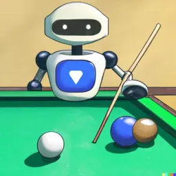
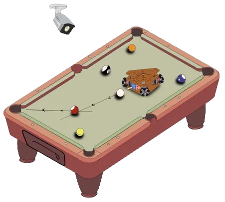
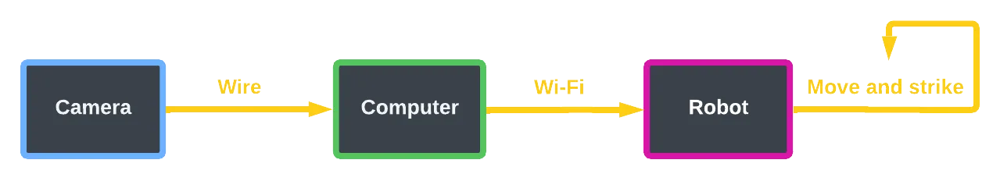
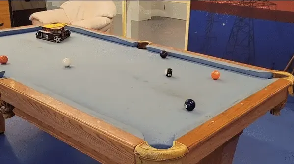
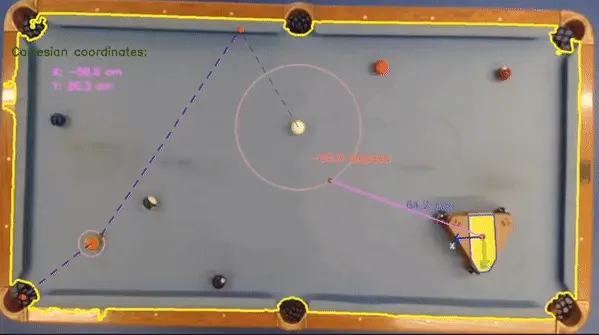
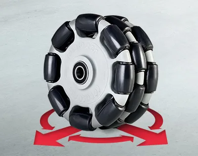
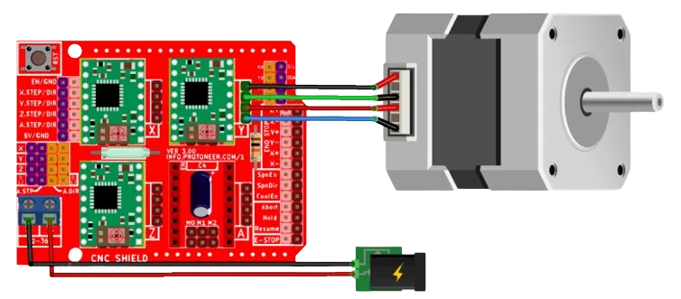
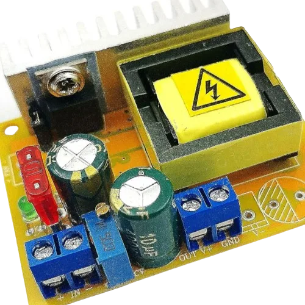
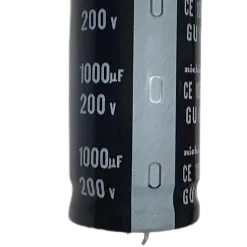
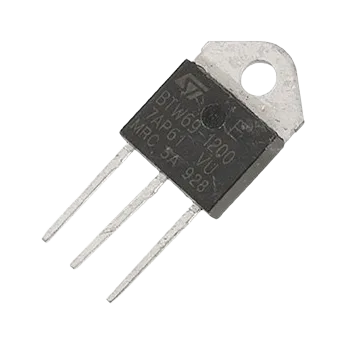
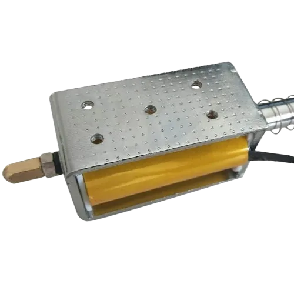
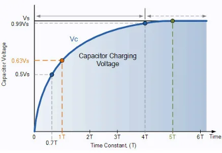
The full diagram includes optocouplers and thyristors, which I explain in more detail in my CoilGun project . It also includes a 4S LiPo battery, a buck converter to regulate voltage, and a seven-segment voltage display.
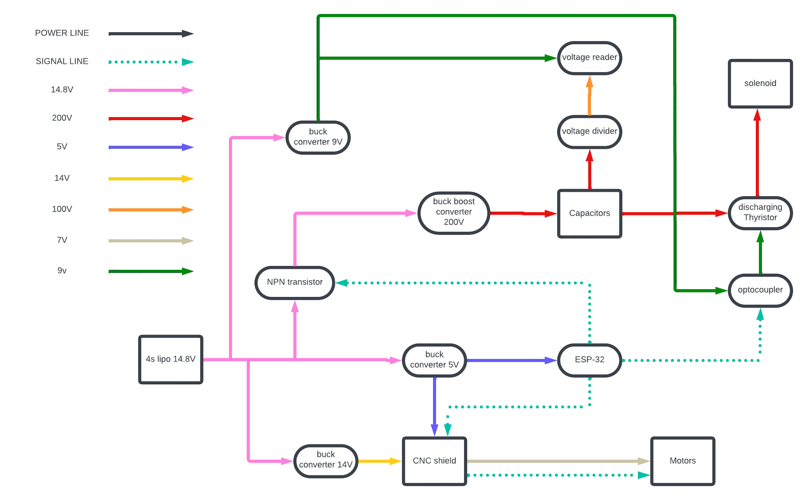
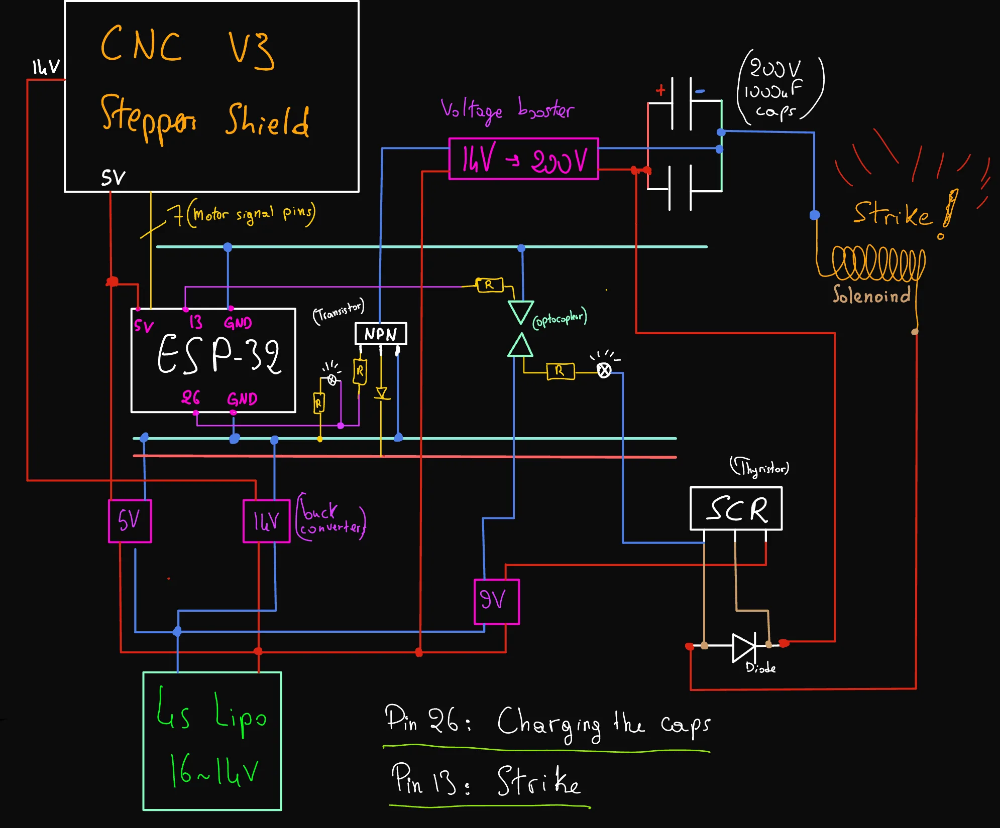
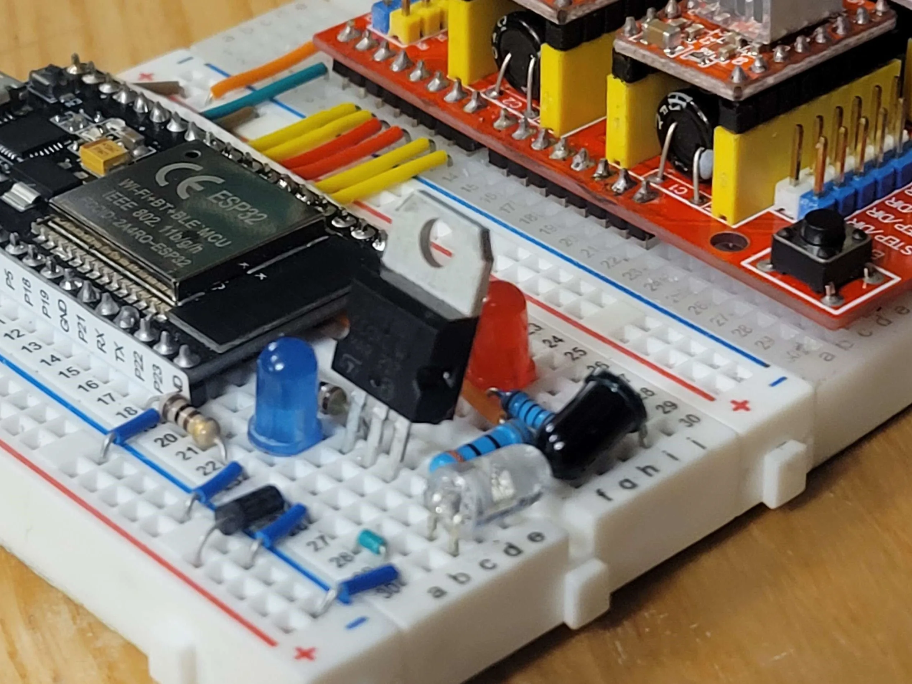
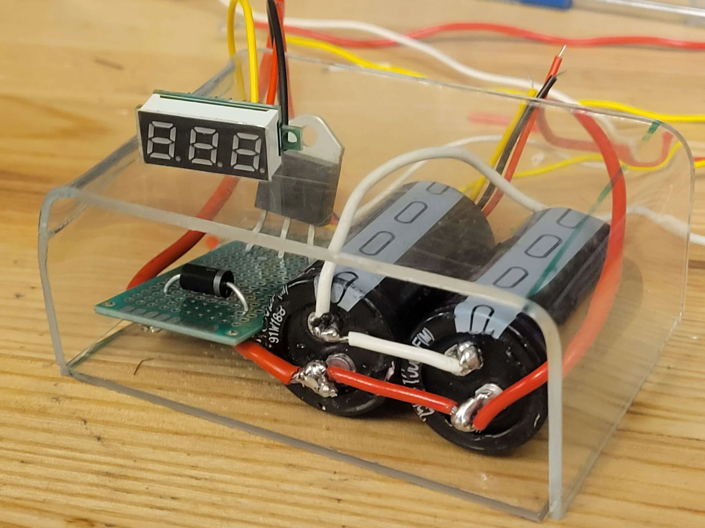
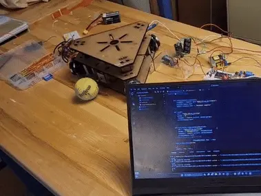
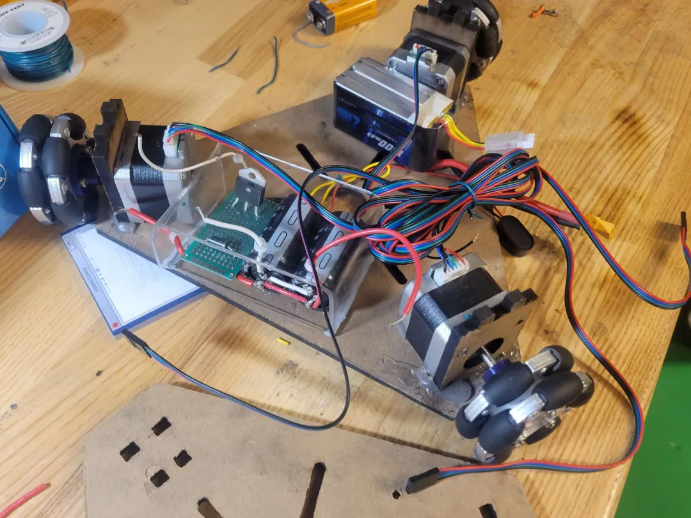
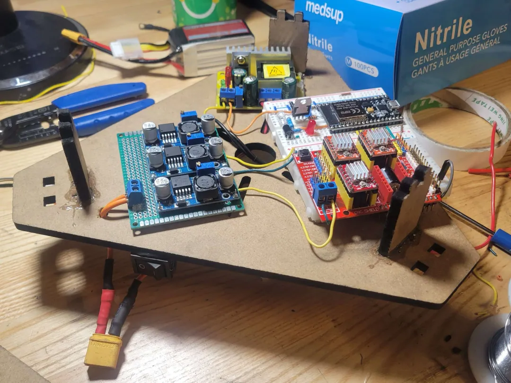
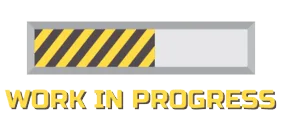
You can find the source code here: GitHub
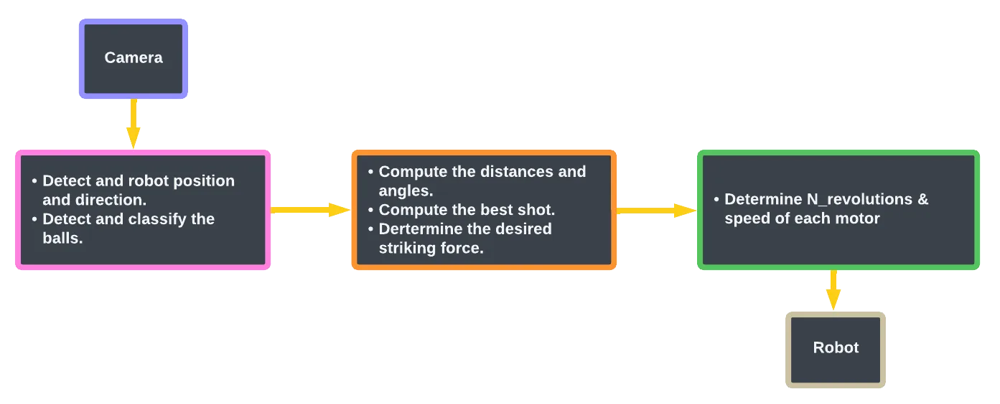
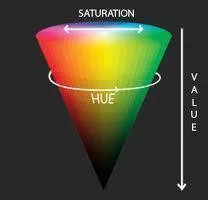
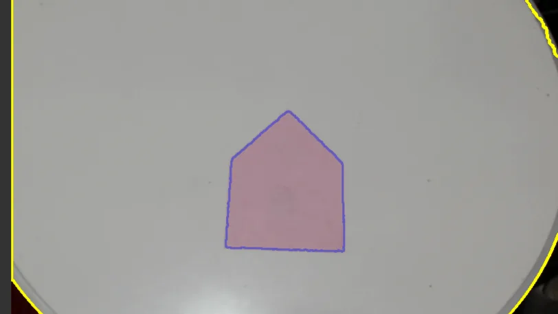
cv2.bitwise_and to create these masks. 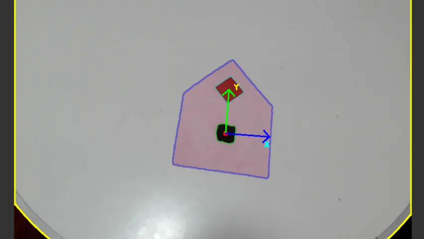
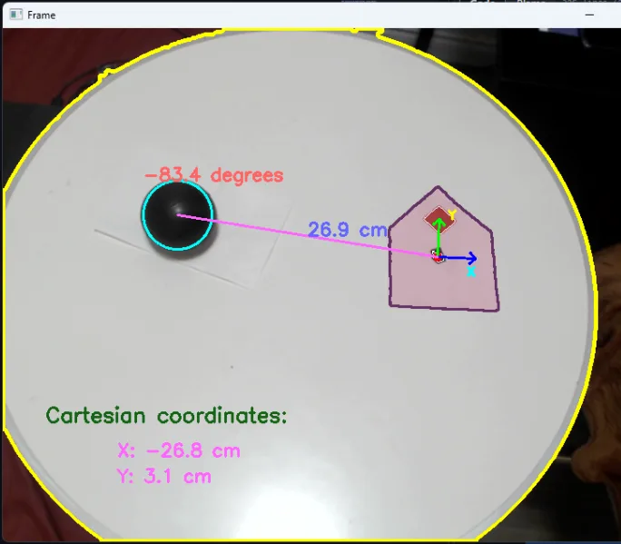
Basic computer vision has its limits, even with carefully tuned Hough-circle parameters. Beyond detecting a ball, we also need to identify which type it is. The planned classification groups are:
We do not need to identify every ball’s exact number or color. For this strategy, solid balls are valid targets, while the opponent’s striped balls must be avoided.
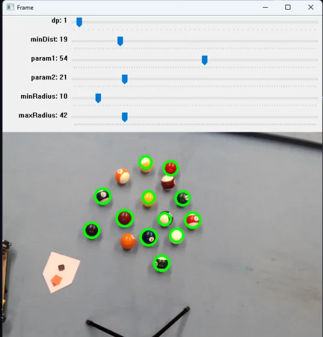
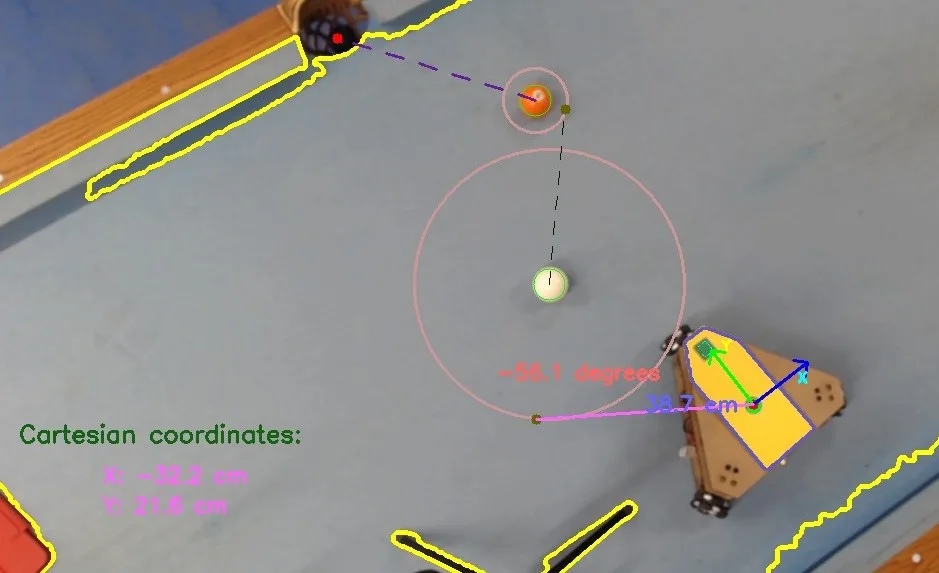
To move from point A to B given their coordinates, target distances and angles must be converted into motor step counts and speeds. There are two approaches:
Rotate first, then translate.
Use vector addition to move from A–>B without rotating.
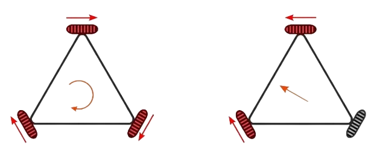
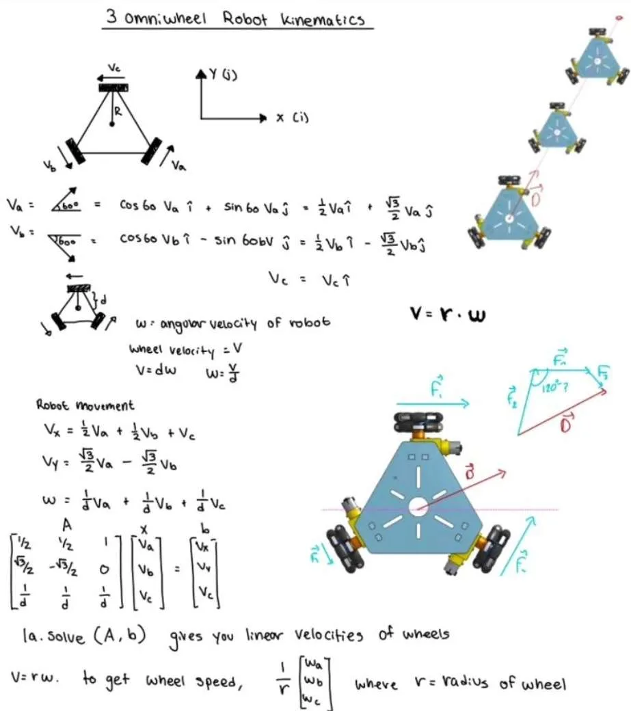
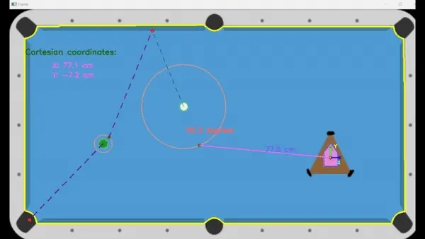
The ESP32 provides Wi-Fi connectivity and controls the motors and solenoid. It joins the same network as the computer and exposes several routes for movement, status checks, and firing:
/control: Accepts six motor-control parameters: StepsX, SpeedX,
StepsY, SpeedY, StepsZ, and SpeedZ./status: Reports whether the robot has finished moving.
/stop: Stops the robot as an emergency command./strike: Charges the capacitors, then discharges them through the
solenoid. Adjustable charging time controls shot strength. The goal was to give each wheel its own step count and speed while allowing all three wheels to move
together. Doing this directly is awkward because basic stepper control relies on loops and
delay. Fortunately, I found
AccelStepper , which handles this without manually implementing millis
timing and nonblocking motor control.
//ESP-32 CODE
//setting up the server route
server.on("/control", HTTP_GET, [](AsyncWebServerRequest *request){
String stepsX, speedX, stepsY, speedY, stepsZ, speedZ;
if (request->hasParam("stepsX") && request->hasParam("speedX") &&
request->hasParam("stepsY") && request->hasParam("speedY") &&
request->hasParam("stepsZ") && request->hasParam("speedZ")) {
stepsX = request->getParam("stepsX")->value();
speedX = request->getParam("speedX")->value();
stepsY = request->getParam("stepsY")->value();
speedY = request->getParam("speedY")->value();
stepsZ = request->getParam("stepsZ")->value();
speedZ = request->getParam("speedZ")->value();
controlSteppers(stepsX.toInt(), speedX.toFloat(), stepsY.toInt(), speedY.toFloat(), stepsZ.toInt(), speedZ.toFloat());
request->send(200, "text/plain", "Motors commanded successfully");
} else {
request->send(400, "text/plain", "Invalid parameters");
}
});
//function to control the motors
void controlSteppers(int stepsX, float speedX, int stepsY, float speedY, int stepsZ, float speedZ) {
digitalWrite(enablePin, LOW);
movementComplete=false;
stepperX.setMaxSpeed(speedX);
stepperY.setMaxSpeed(speedY);
stepperZ.setMaxSpeed(speedZ);
stepperX.move(stepsX);
stepperY.move(stepsY);
stepperZ.move(stepsZ);
}
//then we put it into loop
void loop() {
stepperX.run();
stepperY.run();
stepperZ.run();
}
//Python CODE
//#Send a command to the ESP32 to control motor movements.
def send_command(stepsX, speedX, stepsY, speedY, stepsZ, speedZ):
url = f"http://{esp32_ip}/control"
params = {
'stepsX': stepsX,
'speedX': speedX,
'stepsY': stepsY,
'speedY': speedY,
'stepsZ': stepsZ,
'speedZ': speedZ
}
try:
response = requests.get(url, params=params)
print(response.text)
except requests.RequestException as e:
print(f"Error sending request: {e}")
//#Sample command
v=1
stepsX = 1600 *3*0.2
speedX = 500 *2*v
# B
stepsY = -1600 *6*0.2
speedY = 500 *4*v
# A
stepsZ = 1600 *3*0.2
speedZ = 500 *2*v
send_command(stepsX, speedX, stepsY, speedY, stepsZ, speedZ)
ESP_ip_Address/status
route becomes useful.
A global variable, movementComplete , starts as False and becomes True when the
movement finishes. On the Python side, the program keeps checking /status until the move
is complete. Only then does it send the next send_command() command to the motors.
//ESP-32 CODE
//global variable
bool movementComplete = false;
//setting up the server route
server.on("/status", HTTP_GET, [](AsyncWebServerRequest *request){
if (movementComplete) {
request->send(200, "text/plain", "Movement complete");
movementComplete = false; // Reset the flag
} else {
request->send(200, "text/plain", "Movement in progress");
}
});
//make "movementComplete" true when the robot is done moving
if (stepperX.distanceToGo() == 0 && stepperY.distanceToGo() == 0 && stepperZ.distanceToGo() == 0) {
if (!motorsStopped) {
delay(500);
digitalWrite(enablePin, HIGH);
Serial.println("Motors stopped");
motorsStopped = true;
movementComplete = true;
}
//Python CODE
//#returns True if the motors stops
def check_movement_complete():
while True:
response = requests.get(f"http://{esp32_ip}/status")
if response.text == "Movement complete":
break
time.sleep(0.5) # Poll every half second
def execute_follow_up_command(translation_steps, motor_speed):
# Wait for the first command to complete
check_movement_complete()
# Execute the second command
send_command(translation_steps, motor_speed, 0, motor_speed, -translation_steps, motor_speed)
//sample with polar coordinates
if ball_measurements is not None:
for center, radius, distance, angle, X_coordinate, Y_coordinate in ball_measurements:
print(f"Distance = {distance:.1f} cm, Angle = {angle:.1f} degrees")
rotation_steps = -calculate_rotation_steps(angle)
translation_steps = calculate_translation_steps(distance/100)-100
print(f"Rotation Steps: {rotation_steps}, Translation Steps: {translation_steps}")
//translation command
send_command(rotation_steps, MOTOR_SPEED, rotation_steps, MOTOR_SPEED, rotation_steps, MOTOR_SPEED)
//rotation command
threading.Thread(target=lambda: execute_follow_up_command(translation_steps, MOTOR_SPEED)).start()
threading so the rest of the program and UI remain
responsive.The remaining routes are more straightforward. For implementation details, see the GitHub repository’s firmware section.
The GUI is mainly a testing tool. I used Tkinter together with
CustomTkinter to give it a more modern interface.
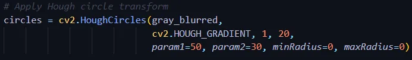
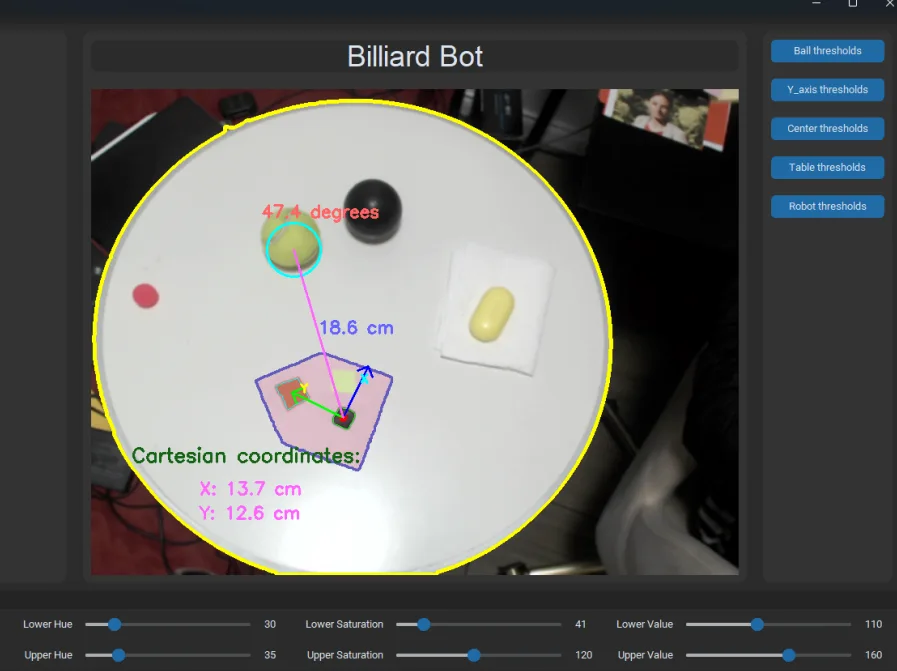
I also added the robot's control section to perform basic movement commands and the firing sequence.
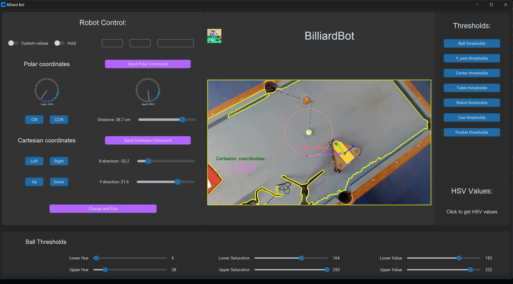
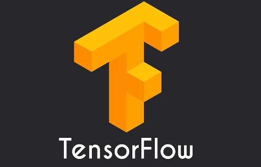
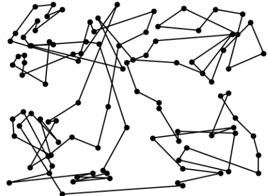
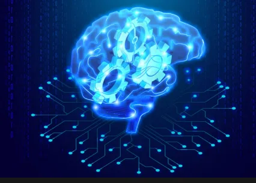